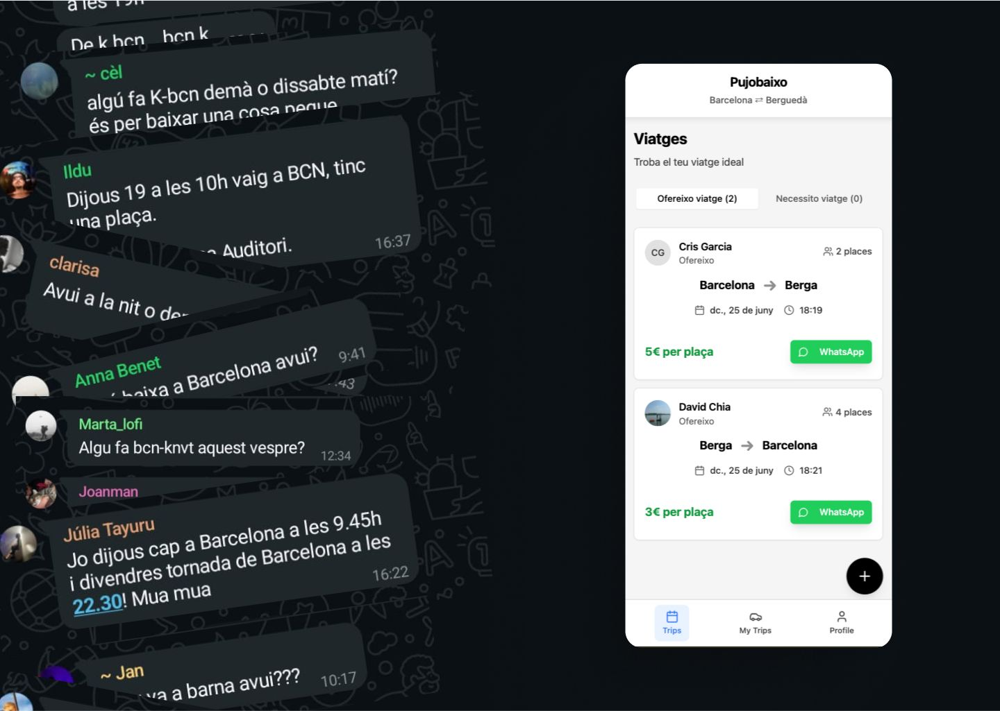
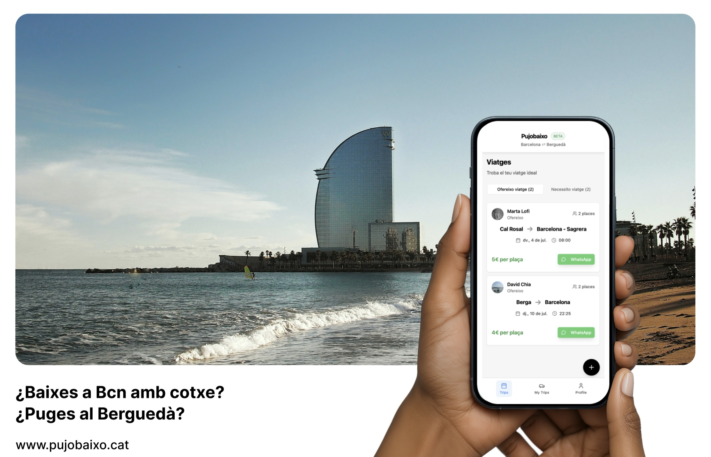
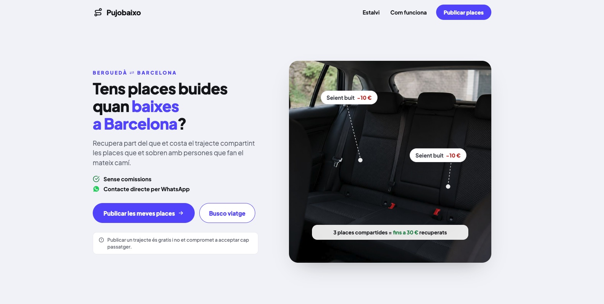

De un grupo de WhatsApp a una red local para compartir trayectos
Pujobaixo nació a partir de una comunidad que ya compartía desplazamientos entre el Berguedà y Barcelona. El reto no era convencer a las personas para que compartieran coche, sino transformar una coordinación informal en un sistema capaz de gestionar más oferta y demanda sin perder su sencillez.
01 Contexto
Antes de convertir la idea en producto, creamos un grupo de WhatsApp con personas de la comunidad que compartían frecuentemente sus desplazamientos entre el Berguedà y Barcelona.
Las publicaciones eran sencillas: normalmente indicaban el día, el origen y la dirección del trayecto. Las personas interesadas terminaban de coordinarse directamente y compartían los gastos del viaje, sin tarifas fijas ni un sistema formal de pago.
Este sistema funcionaba dentro de una comunidad reducida, pero empezaba a mostrar limitaciones a medida que aumentaban los mensajes y las necesidades de coordinación.
El objetivo de Pujobaixo era aprovechar mejor los vehículos que ya realizaban el trayecto, reducir los desplazamientos con plazas vacías y construir una red local con suficiente oferta y demanda para facilitar las coincidencias.
02 Decisión que debía tomar el equipo
Debíamos determinar cómo trasladar una dinámica informal de WhatsApp a un producto digital sin añadir procesos innecesarios ni eliminar la flexibilidad que hacía funcionar a la comunidad.
La decisión no consistía únicamente en diseñar una interfaz. Necesitábamos identificar:
- Qué información era imprescindible para encontrar una coincidencia.
- Qué partes de la coordinación podían estructurarse.
- Qué interacciones debían mantenerse abiertas y flexibles.
- Cómo hacer visible la oferta y la demanda disponibles.
03 Pregunta de investigación
¿Cómo podemos transformar la coordinación informal de una comunidad que comparte trayectos en una red escalable, manteniendo la sencillez y reduciendo el esfuerzo necesario para encontrar una coincidencia?
Como pregunta secundaria, analizamos qué elementos del comportamiento existente debíamos conservar para no convertir una práctica flexible en un proceso excesivamente rígido.
04 Hipótesis iniciales
- Existía suficiente recurrencia de trayectos para construir una red local.
- Centralizar los viajes activos facilitaría encontrar coincidencias.
- Estructurar la información reduciría las conversaciones necesarias para coordinar cada trayecto.
- La coordinación final debía mantenerse en un canal familiar como WhatsApp.
- El ahorro podía reforzar la propuesta de valor, aunque no era la única motivación para compartir vehículo.
05 Metodología y participantes
La investigación partió de la observación de un grupo de WhatsApp formado por personas de la comunidad que ya compartían regularmente sus desplazamientos.
En lugar de preguntar únicamente si utilizarían el servicio, analizamos un comportamiento que ya estaba ocurriendo:
- Qué información incluían al ofrecer o pedir un viaje.
- Cómo respondían las personas interesadas.
- En qué momentos la coordinación se trasladaba a mensajes privados.
- Qué dificultades aparecían al buscar viajes anteriores.
- Cómo variaban la oferta y la demanda según el día y la dirección.
- Qué impedía identificar una coincidencia disponible.
Estos aprendizajes se trasladaron progresivamente al diseño del flujo y a la construcción del primer producto funcional.
06 Evidencia observada
El grupo confirmó que existía una comunidad dispuesta a compartir trayectos y repartir los gastos del desplazamiento.
Sin embargo, una conversación cronológica no funcionaba como sistema de gestión:
- Costaba saber qué viajes continuaban disponibles.
- La información necesaria no siempre aparecía completa.
- Los mensajes antiguos quedaban enterrados por nuevas conversaciones.
- Encontrar una coincidencia dependía de revisar manualmente el grupo.
- No existía una visión conjunta de la oferta y la demanda.
- La coordinación se volvía más difícil a medida que aumentaba la actividad.
El grupo resolvía la comunicación entre personas, pero no permitía organizar ni escalar la red.

07 Patrones e insights
1. El comportamiento ya existía
No necesitábamos crear desde cero el hábito de compartir coche. La comunidad ya lo hacía cuando encontraba una coincidencia adecuada.
2. La principal fricción era la coordinación
El problema no era únicamente la falta de interés, sino el esfuerzo necesario para localizar un viaje compatible, comprobar si seguía disponible y completar la información que faltaba.
3. Escalar requería estructurar, no complicar
El producto debía ordenar los viajes sin convertir una práctica sencilla en un proceso rígido o burocrático.
4. La visibilidad de la red condicionaba su utilidad
Para que Pujobaixo generara valor, conductores y pasajeros necesitaban ver la oferta y la demanda activas en cada dirección del trayecto.
5. WhatsApp seguía teniendo una función útil
La plataforma podía organizar el descubrimiento y facilitar la coincidencia, mientras que WhatsApp permitía mantener una coordinación final directa, flexible y reconocible.
08 Implicaciones para producto
La investigación mostró que Pujobaixo no debía sustituir completamente el comportamiento existente, sino estructurar las partes que generaban más esfuerzo.
La principal oportunidad consistía en centralizar los viajes activos, normalizar la información necesaria y diferenciar claramente entre quienes ofrecían plazas y quienes buscaban desplazamiento.
También era importante conservar un modelo ligero: la plataforma facilitaría el encuentro, pero las personas mantendrían el control sobre la decisión de viajar juntas y sobre la coordinación final.
El ahorro debía comunicarse como un beneficio tangible de aprovechar plazas vacías, sin reducir la propuesta de valor a una transacción económica. El propósito principal seguía siendo optimizar desplazamientos y fortalecer una red local de movilidad compartida.
09 Decisiones tomadas
Separar oferta y demanda
Organizamos los viajes en dos categorías: Ofrezco y Necesito. Esto permitía distinguir rápidamente entre conductores con plazas disponibles y personas que buscaban un trayecto.
Estructurar la información del viaje
Cada publicación agrupaba los datos necesarios para evaluar una posible coincidencia: origen, destino, fecha, hora, plazas y dirección del recorrido.
Centralizar los viajes activos
Los trayectos dejaron de depender del orden cronológico de una conversación y pasaron a mostrarse como publicaciones consultables y actualizadas.
Mantener el contacto por WhatsApp
Una vez encontrada una coincidencia, las personas podían contactar directamente para terminar de acordar los detalles. Esto reducía el alcance inicial del producto y preservaba una dinámica que la comunidad ya conocía.
Dar control sobre las publicaciones
Los usuarios podían consultar, gestionar o cancelar sus propios viajes, haciendo más visible qué oferta continuaba realmente disponible.
Hacer visible el beneficio compartido
La comunicación del producto incorporó el ahorro derivado de repartir los gastos, junto con el beneficio colectivo de reducir vehículos con plazas vacías.
El nuevo flujo quedó estructurado en una secuencia sencilla: publicar una necesidad u oferta → encontrar una coincidencia activa → coordinar el viaje por WhatsApp.

10 Resultado, limitaciones y próximos pasos
Pujobaixo convirtió una coordinación dispersa en un producto funcional capaz de centralizar la oferta y la demanda de trayectos entre el Berguedà y Barcelona.

La principal aportación de la investigación fue identificar que el valor no estaba en inventar una nueva conducta, sino en reducir el coste de coordinación de una práctica que ya existía.
El producto permitió formalizar la información mínima, hacer visibles los viajes activos y preparar la dinámica para incorporar una comunidad más amplia.
Limitaciones: la observación inicial se concentró en personas que ya estaban predispuestas a compartir coche y pertenecían a una comunidad concreta. Esto permitió comprender el comportamiento de usuarios activos, pero no explica todavía:
- Las barreras de quienes nunca han compartido vehículo.
- Las necesidades de confianza entre personas desconocidas.
- El comportamiento de la red con un volumen mayor de usuarios.
- El equilibrio necesario entre oferta y demanda para generar coincidencias recurrentes.
Próximos pasos: la siguiente fase debería analizar el comportamiento real del producto mediante:
- Número de viajes ofrecidos y solicitados.
- Coincidencias generadas por dirección y franja horaria.
- Tiempo transcurrido hasta el primer contacto.
- Porcentaje de publicaciones que reciben una respuesta.
- Viajes cancelados o que dejan de estar disponibles.
- Usuarios que vuelven a publicar.
- Relación entre conductores y pasajeros activos.
Evidencia → Insight → Decisión
La comunidad ya compartía trayectos, pero resultaba difícil saber qué viajes seguían disponibles y encontrar una coincidencia dentro del grupo.
La principal barrera no era la falta de voluntad para compartir coche, sino el esfuerzo de coordinar oferta y demanda mediante una conversación no estructurada.
Centralizar los viajes activos, separar oferta y demanda, estructurar la información necesaria y mantener WhatsApp para la coordinación final.
Aprendizaje principal: escalar una práctica comunitaria no siempre exige reemplazarla. A veces consiste en identificar qué ya funciona, estructurar únicamente las fricciones y conservar la flexibilidad que hizo posible el comportamiento original.
¿Tu producto necesita escalar un comportamiento que ya existe en una comunidad?
Hablemos de cómo estructurar solo las fricciones, sin perder la flexibilidad que lo hace funcionar.
Hablemos